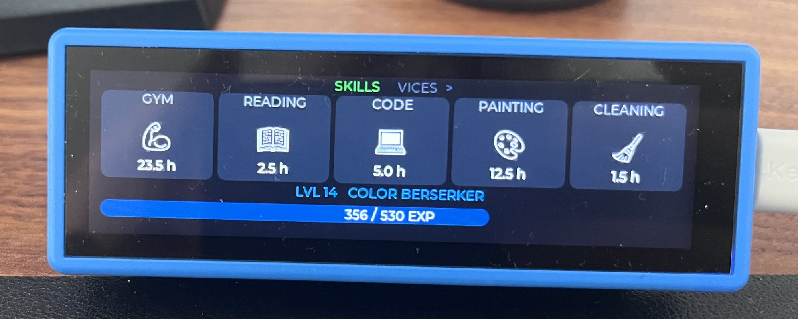
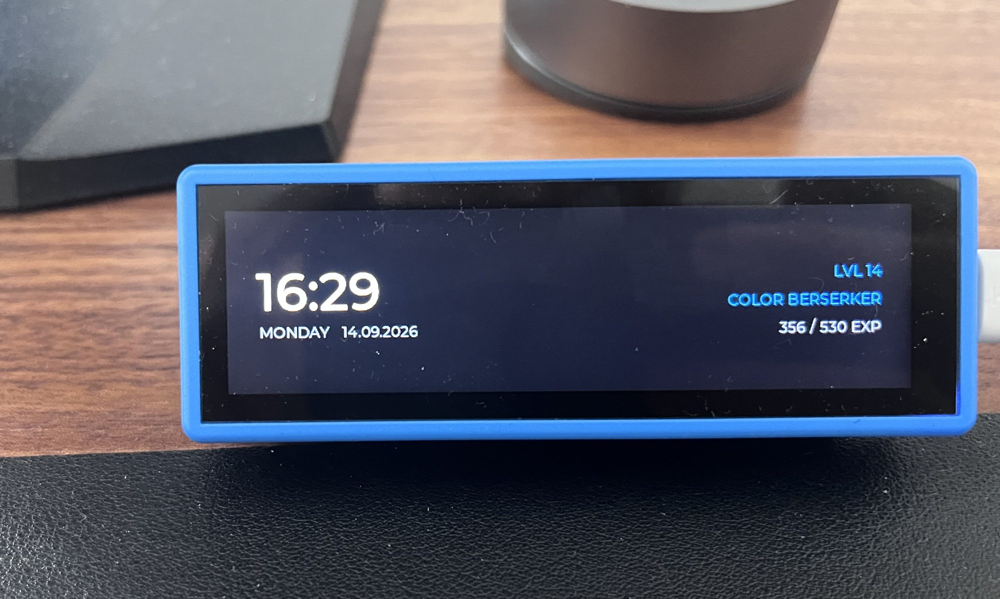
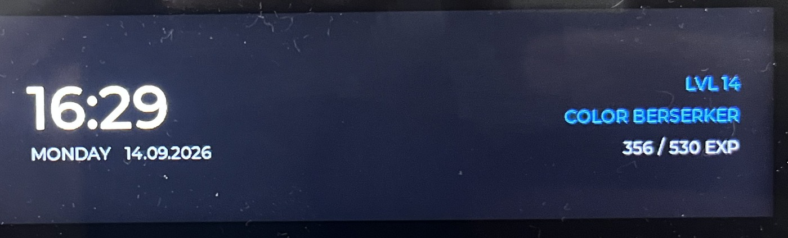
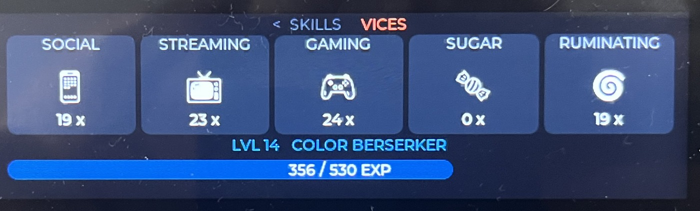
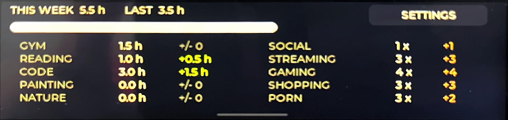

Skills & vices
The board
- Up to 6 skills from 18 templates, booked in half-hour steps
- Up to 6 vices from 12 detox categories, counted as occurrences
- No cap on entering things later
Gamification device · Open source
Gamification for real life, on its own hardware. A narrow bar display on the desk that shows where your time actually went — no app to swipe away, no cloud, no account.
Gamification-Gerät · Open Source
Gamification fürs echte Leben, auf eigener Hardware. Ein schmales Balkendisplay auf dem Schreibtisch, das zeigt, wofür deine Zeit wirklich draufgeht — keine App, die man wegwischt, keine Cloud, kein Account.

How it started
I wanted to see what I actually spend my time on — but not in yet another app you swipe away. The model was the resource bar from strategy games: one narrow readout, always visible, telling you at a glance where you stand.
There are hundreds of habit trackers as software. The difference is the object. It sits on the desk and can’t be ignored.
Software you can close. A thing on your desk keeps looking at you.
Wie es entstand
Ich wollte sehen, wofür ich meine Zeit tatsächlich verwende — aber nicht in noch einer App, die man wegwischt. Vorbild waren die Ressourcenleisten aus Strategiespielen: eine schmale Anzeige, die immer sichtbar ist und auf einen Blick zeigt, wie man steht.
Habit-Tracker als Software gibt es hunderte. Der Unterschied liegt im Objekt, das auf dem Schreibtisch steht und nicht ignoriert werden kann.
Software kann man schließen. Ein Ding auf dem Tisch schaut zurück.
The device
A standalone device — not an accessory for a phone. Everything runs on the hardware itself, and everything stays there.
Das Gerät
Ein eigenständiges Gerät — kein Zubehör für ein Handy. Alles läuft auf der Hardware selbst, und alles bleibt dort.

The screens
Amber on black, readable from across the room, and never more than one screen deep. Photographs of the running prototype, straightened and cropped — nothing redrawn.

Lock screen
What it shows when nobody touches it: time, date, level, rank and how far into the level you are.
Skills
Today’s booked hours per skill, with the EXP bar underneath. Tap a tile, then book — half an hour at a time.

Vices
The same grid one swipe over, counted as occurrences instead of hours. They cost no EXP — that’s what keeps them honest.

The week
This week against the last one, the difference per skill in green, and every vice with its change. The whole review on one screen.
Die Screens
Bernstein auf Schwarz, quer durchs Zimmer lesbar, nie mehr als einen Screen tief. Fotos vom laufenden Prototyp, gerade gezogen und freigestellt — nichts nachgebaut.
Lockscreen
Was zu sehen ist, wenn niemand das Gerät anfasst: Uhrzeit, Datum, Level, Rang und wie weit du im Level bist.
Skills
Die heute gebuchten Stunden pro Skill, darunter der EXP-Balken. Kachel antippen, dann buchen — eine halbe Stunde auf einmal.
Laster
Dasselbe Raster eine Wischbewegung weiter, gezählt als Vorkommnisse statt Stunden. Sie kosten keine EXP — genau das hält sie ehrlich.
Die Woche
Diese Woche gegen die letzte, die Differenz pro Skill in Grün und jedes Laster mit seiner Veränderung. Der ganze Rückblick auf einem Screen.
In everyday use
Set up once, then it’s a few taps a day. Entering things in the evening is the normal case, not the exception.
Up to 6 skills from 18 templates, up to 6 vices from 12 detox categories. That’s your board — narrow on purpose, so it stays readable.
Skills are booked in half-hour steps, vices are counted as occurrences. Select first, then book — a mis-tap costs one tap instead of a wrong entry.
Invested minutes are the EXP, so the system calibrates itself — nothing to weight, nothing to talk yourself into. The level curve gets steeper with every rank.
Review of the week behind you, a goal for the one ahead, seals for goals you hit, and bonus EXP for overtime. Your title words are redetermined here too.
Calendar heatmap, distribution across the hours of the day, split by skills and vices, and the trend over time — all rendered on the device itself.
Im Alltag
Einmal einrichten, danach sind es ein paar Taps am Tag. Abends alles eintragen ist der Normalfall, nicht die Ausnahme.
Bis zu 6 Skills aus 18 Vorlagen, bis zu 6 Laster aus 12 Detox-Kategorien. Das ist dein Board — absichtlich schmal, damit es lesbar bleibt.
Skills werden in Halbstundenschritten gebucht, Laster als Vorkommnisse gezählt. Erst auswählen, dann buchen — ein Fehltreffer kostet einen Tap statt einer falschen Buchung.
Investierte Minuten sind die EXP, dadurch kalibriert sich das System selbst — nichts zu gewichten, nichts, wovon man sich überzeugen muss. Die Levelkurve wird mit jedem Rang steiler.
Rückblick auf die vergangene Woche, ein Ziel für die kommende, Siegel für erreichte Ziele und Bonus-EXP für Überstunden. Hier werden auch die Titelwörter neu bestimmt.
Kalender-Heatmap, Verteilung über die Tageszeit, Aufteilung nach Skills und Lastern und der Verlauf über die Zeit — alles direkt auf dem Gerät gezeichnet.
Features
The board
The currency
Unlocked, then rebuilt weekly
Monday, 4 a.m.
On the desk, day and night
Yours, and staying here
lifebar.localFunktionen
Das Board
Die Währung
Freigeschaltet, wöchentlich neu gebaut
Montag, 4 Uhr
Auf dem Tisch, Tag und Nacht
Deine, und sie bleiben hier
lifebar.localDesign principles
Gestaltungsprinzipien
Status · Build it yourself
The LifeBar runs on my desk every day. Firmware, case files and documentation are public on GitHub, so you can build your own today.
Up next: sounds, proper backlight control, and analytics on the computer as well as on the device. A ready-built version is not available yet.
Stand · Selbst bauen
Die LifeBar läuft jeden Tag auf meinem Schreibtisch. Firmware, Gehäusedateien und Doku sind öffentlich auf GitHub – du kannst dir heute deine eigene bauen.
Als Nächstes: Töne, echte Backlight-Steuerung und die Auswertung auch auf dem Rechner statt nur auf dem Gerät. Eine fertig gebaute Version gibt es noch nicht.
Waveshare ESP32-S3 with the 3.49″ bar display (172 × 640, touch).
Print it from the files in the repository – designed in Fusion 360.
Flash it over USB-C, connect Wi-Fi through the device’s own portal – done. No account.